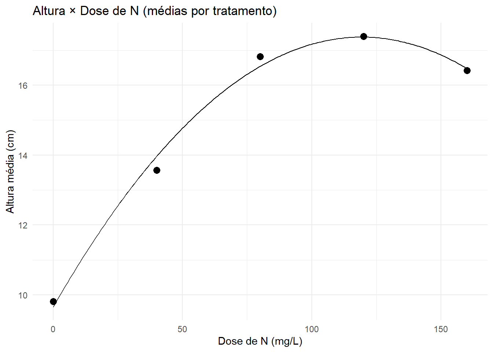

No viveiro, queremos definir dose de nitrogênio para maximizar o crescimento inicial de mudas. Em outro ensaio, avaliamos como o pH do substrato (após calagem) afeta o diâmetro do colo. Em ambos os casos o fator é quantitativo e o objetivo é modelar a resposta em função do nível (não comparar níveis como se fossem categorias soltas).
10.2 🎯 Objetivos de aprendizagem
Compreender a ANOVA para regressão polinomial (linear, quadrática, cúbica…).
Ajustar modelos polinomiais no contexto de experimentos (DIC).
Avaliar falta de ajuste (lack-of-fit) usando o erro puro das repetições.
Usar ExpDes.pt (dic(quali = FALSE)) para decompor a soma de quadrados do tratamento em componentes polinomiais.
Construir gráficos com médias por tratamento, incluindo equação e R², no ggplot2.
10.3 🧠 Teoria – ANOVA para regressão polinomial em experimento (DIC)
Considere um experimento com k níveis do fator quantitativo (x_1, …, x_k) e r repetições por nível. O modelo polinomial de grau g (ex.: g=2 para quadrático) é:
A ANOVA do tratamento (tradicional) pode ser decomposta em contrastes ortogonais: - Linear (L), Quadrático (Q), Cúbico (C), …, até grau k-1 (limitado pela quantidade de níveis).
- Cada contraste tem seu SQ, GL = 1, QM, F, p-valor.
- O Erro (puro) vem da variação entre repetições dentro de cada nível - ele permite testar falta de ajuste do polinômio escolhido.
Teste de falta de ajuste (LOF): compare um modelo “saturado por tratamentos” com o modelo polinomial (ex.: grau 2).
- H0: o polinômio ajusta bem (sem falta de ajuste).
- HA: há falta de ajuste (o polinômio é muito simples para a forma verdadeira).
Hipótese biológica: resposta quadrática com ótimo em torno de 110–120 mg/L.
10.5.2 Análise com ExpDes.pt (decomposição polinomial)
Código
library(readr); library(dplyr); library(ggplot2)library(ExpDes.pt)# Quarto local:dados <-read_csv("dados/dic_doseN_altura.csv", show_col_types =FALSE)# Colab:# dados <- read_csv("/content/dic_doseN_altura.csv", show_col_types = FALSE)dados <- dados |>mutate(Dose_N_mgL =as.numeric(Dose_N_mgL) )# ExpDes: DIC com fator quantitativo -> quali = FALSE (faz decomposição polinomial)out_dic <-dic(trat = dados$Dose_N_mgL,resp = dados$Altura_cm,quali =FALSE# graus a testar (até k-1); aqui 4 níveis polinomiais)
------------------------------------------------------------------------
Quadro da analise de variancia
------------------------------------------------------------------------
GL SQ QM Fc Pr>Fc
Tratamento 4 199.500 49.875 82.561 3.8446e-12
Residuo 20 12.082 0.604
Total 24 211.582
------------------------------------------------------------------------
CV = 5.25 %
------------------------------------------------------------------------
Teste de normalidade dos residuos ( Shapiro-Wilk )
Valor-p: 0.4548708
De acordo com o teste de Shapiro-Wilk a 5% de significancia, os residuos podem ser considerados normais.
------------------------------------------------------------------------
------------------------------------------------------------------------
Teste de homogeneidade de variancia
valor-p: 0.9929198
De acordo com o teste de bartlett a 5% de significancia, as variancias podem ser consideradas homogeneas.
------------------------------------------------------------------------
Ajuste de modelos polinomiais de regressao
------------------------------------------------------------------------
Modelo Linear
=========================================
Estimativa Erro.padrao tc valor.p
-----------------------------------------
b0 11.3924 0.2692 42.3126 0
b1 0.0426 0.0027 15.5170 0
-----------------------------------------
R2 do modelo linear
--------
0.729090
--------
Analise de variancia do modelo linear
========================================================
GL SQ QM Fc valor.p
--------------------------------------------------------
Efeito linear 1 145.4536 145.4536 240.78 0
Desvios de Regressao 3 54.0466 18.0155 29.82 0
Residuos 20 12.0820 0.6041
--------------------------------------------------------
------------------------------------------------------------------------
Modelo quadratico
=========================================
Estimativa Erro.padrao tc valor.p
-----------------------------------------
b0 9.6564 0.3271 29.5188 0
b1 0.1294 0.0097 13.3613 0
b2 -0.0005 0.0001 -9.3436 0
-----------------------------------------
R2 do modelo quadratico
--------
0.993449
--------
Analise de variancia do modelo quadratico
========================================================
GL SQ QM Fc valor.p
--------------------------------------------------------
Efeito linear 1 145.4536 145.4536 240.78 0
Efeito quadratico 1 52.7397 52.7397 87.3 0
Desvios de Regressao 2 1.3069 0.6534 1.08 0.35805
Residuos 20 12.0820 0.6041
--------------------------------------------------------
------------------------------------------------------------------------
Modelo cubico
=========================================
Estimativa Erro.padrao tc valor.p
-----------------------------------------
b0 9.7616 0.3451 28.2862 0
b1 0.1106 0.0220 5.0389 0.0001
b2 -0.0002 0.0004 -0.6136 0.5464
b3 -0.000001 0 -0.9571 0.3500
-----------------------------------------
R2 do modelo cubico
--------
0.996223
--------
Analise de variancia do modelo cubico
========================================================
GL SQ QM Fc valor.p
--------------------------------------------------------
Efeito linear 1 145.4536 145.4536 240.78 0
Efeito quadratico 1 52.7397 52.7397 87.3 0
Efeito cubico 1 0.5534 0.5534 0.92 0.34996
Desvios de Regressao 1 0.7535 0.7535 1.25 0.27729
Residuos 20 12.0820 0.6041
--------------------------------------------------------
------------------------------------------------------------------------
Código
#out_dic
10.5.3 Gráfico com médias por dose, equação e R²
Código
# Médias por tratamentomedias <- dados |>group_by(Dose_N_mgL) |>summarise(Altura_media =mean(Altura_cm), .groups ="drop")# Ajuste polinomial nas MÉDIAS (prática experimental para figura de relatório)fit_med <-lm(Altura_media ~ Dose_N_mgL +I(Dose_N_mgL^2), data = medias)# Coeficientes e R2coefs <-coef(fit_med)b0 <- coefs[1]; b1 <- coefs[2]; b2 <- coefs[3]R2 <-summary(fit_med)$r.squared# Curva suavenewd <-data.frame(Dose_N_mgL =seq(min(medias$Dose_N_mgL), max(medias$Dose_N_mgL), length.out =200))newd$yhat <-predict(fit_med, newdata = newd)ggplot(medias, aes(Dose_N_mgL, Altura_media)) +geom_point(size =3) +geom_line(data = newd, aes(Dose_N_mgL, yhat)) +labs(title ="Altura × Dose de N (médias por tratamento)",x ="Dose de N (mg/L)",y ="Altura média (cm)") +theme_minimal()

10.5.4 🔧 Nível ótimo (vértice) pelo método da 1ª derivada
Considere o modelo quadrático ajustado (em geral, sobre as médias por tratamento): \[
\hat{Y}(x) = \beta_0 + \beta_1 x + \beta_2 x^2.
\] O ponto de ótimo (máximo ou mínimo) ocorre quando a 1ª derivada é zero: \[
\frac{d\hat{Y}}{dx} = \beta_1 + 2\beta_2 x = 0 ;\Rightarrow;
\boxed{x^* = -\frac{\beta_1}{2\beta_2}}.
\]
Máximo (ótimo desejável): se \(\beta_2 < 0 \Rightarrow\) concavidade voltada para baixo.
Mínimo: se \(\beta_2 > 0\).
Atenção ao domínio: se \(x^*\) ficar fora do intervalo testado \((x_{\min}, x_{\max})\), prefira o melhor ponto na borda do domínio experimental.
10.5.4.1 Implementação prática (R)
Supondo que você ajustou o quadrático nas médias por tratamento:
Código
b <-coef(fit_med)b0 <- b[1]; b1 <- b[2]; b2 <- b[3]# nível ótimox_star <--b1/(2*b2)x_star
Dose_N_mgL
119.2995
Código
#y_star <- b0 + b1*x_star + b2*x_star^2#y_star
Dica
Fórmula prática (modelo grau 2):\[
\boxed{x^* = -\dfrac{\beta_1}{2\beta_2},}
\] Use somente quando houver evidência de curvatura (componente Quadrática significativa e/ou LOF não significativo) e **(_2<0)** para máximo.